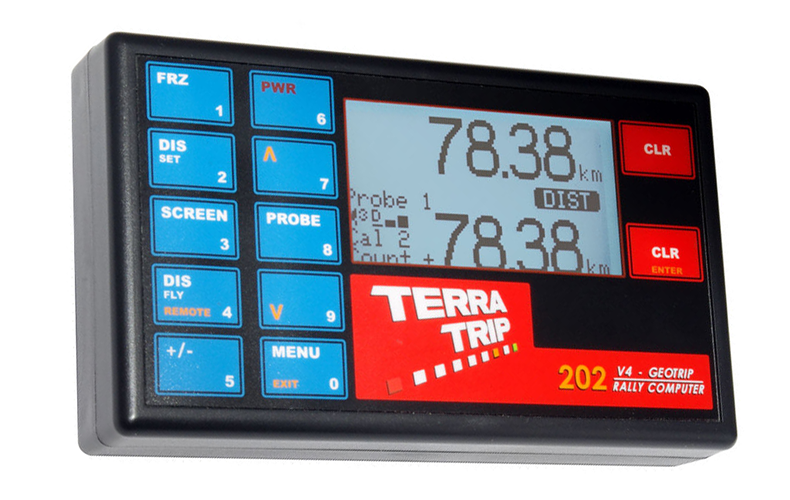

Terratrip 202 GPS
Pris: 2459kr
202 GeoTrip er et præcist dobbeltdistance-tripmeter med hastighedsindlæsning. GPS aktiveret, som sporer op til 48 satellitter samtidigt. GPS kan give ekstremt høj nøjagtighed, typisk 0,2% af fjernstyret. GeoTrip GPS er langt mere præcis end GPS inde i en smartphone eller de fleste bil SatNav enheder. Installation er simpel med vores beslag, enten sugning til forruden eller bolten til køretøjet, og derefter tilsluttes bilens 12 volt forsyning. Der kræves ikke mere installation, men hvis du har brug for en mekanisk probe, kan du også tilslutte 1 eller 2. Hvis du tilslutter en sonde, så har du den ekstra funktion af sondebackbacken, hvis GPS-signalet går tabt på grund af en tunnel eller lignende, så vil sonden automatisk overtage. Hvis ingen mekanisk probe og GPS-signal går tabt, vil enheden estimere den tilbagelagte afstand, når signalet genvindes. En valgfri fjernbetjening (del nr. T016G) kan monteres, og dette vil vise intervalafstand eller hastighed. Valgfri fjernbetjeningsenhed er tilgængelig via enten fjernbetjening eller håndholdt fjernbetjening.
Specifikationer:
- GPS aktiveret
- Total afstandsdisplay op til 999,99 og interval op til 99,99
- Kalibrere for miles eller km
- 5 cifferkalibrering
- To sondeindgange
- To kalibreringsnumre
- Hastighedsindikation
- Manuelt justerbar total afstandsdisplay
- Distance Fly for: Hurtig indstilling af afstandsvisning
- Tæller op og ned facilitet
- Split (fryse) funktion
- Elektronisk hukommelse sikkerhedskopieres
- LED-displaybelysning
- Fuldt numerisk tastatur
- Valgfri fjernbetjening til hastighed, intervalafstand
- Automatisk kalibrering af sonden til en bestemt afstand
- Brug GPS til kalibrerede sonder.
- HR model, der måler til 1 meter til vejmåling